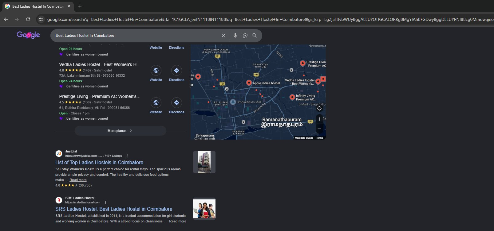
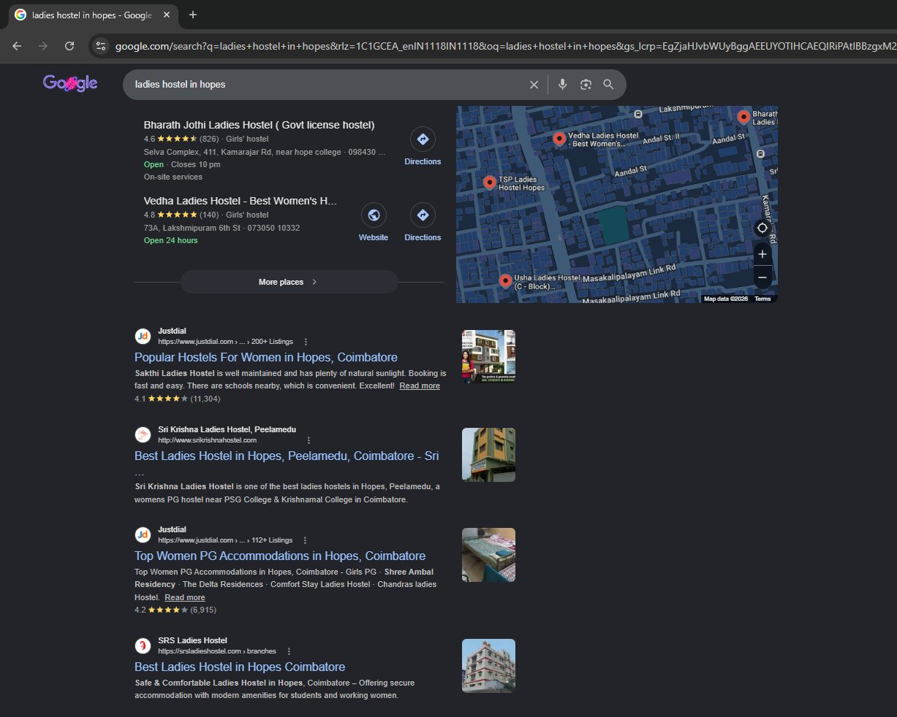
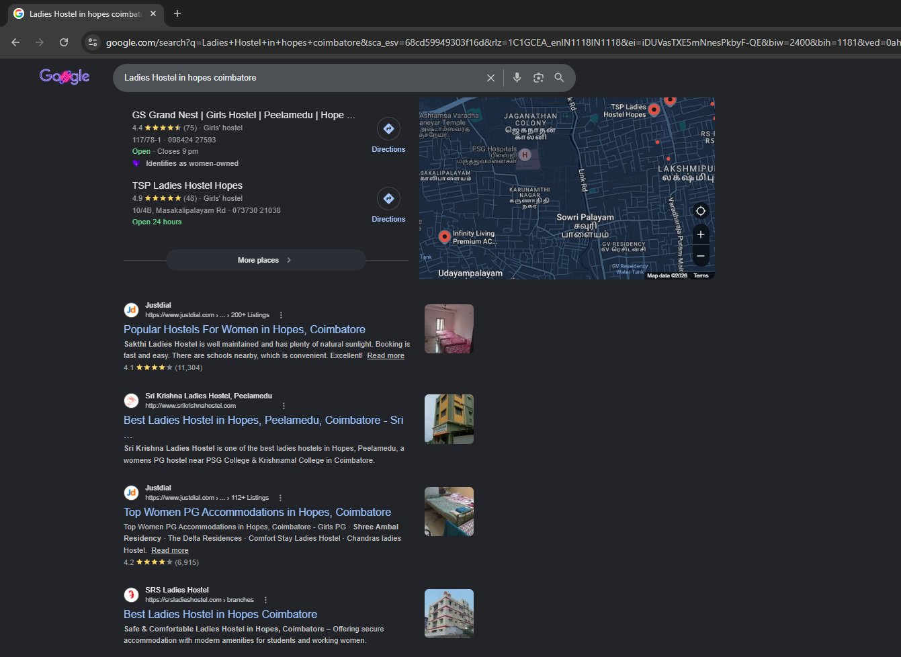
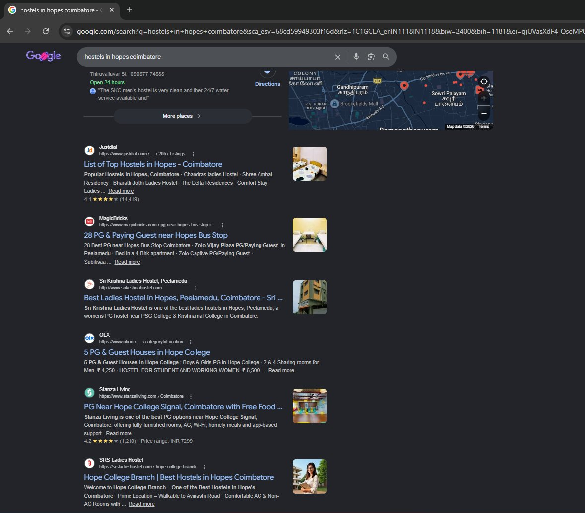
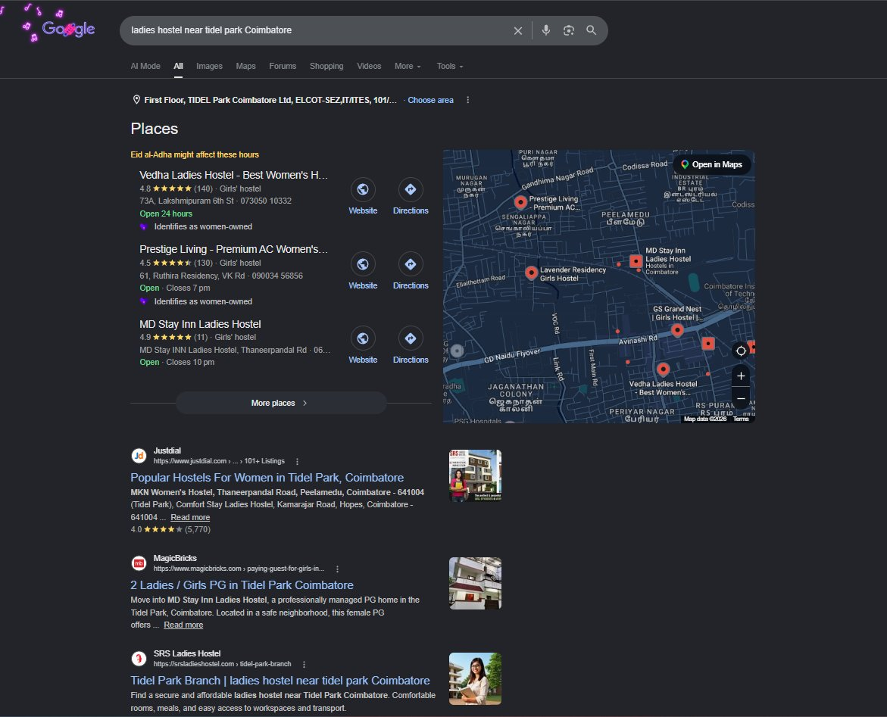

SRS Ladies Hostel in Coimbatore had a website — but it was generating no organic traffic and ranking for nothing. My task was to build their search presence from the ground up, targeting women in Coimbatore who were actively searching for accommodation near their college, workplace, or hospital.
This was also my first SEO engagement. Every decision I made was deliberate, research-backed, and documented. No guessing. No shortcuts.
The first thing I did was conduct a full SEO audit of the website. Before writing a single meta title or publishing a blog, I needed to know exactly what state the site was in. I examined page speed, crawl errors, indexation issues, on-page gaps, content quality, and technical structure.
The audit produced a detailed report that became the project's roadmap. Every subsequent action — on-page, technical, or content — was traceable back to something the audit had identified. This step is often skipped or rushed. I treated it as the foundation of everything.
Using Google Keyword Planner and SEMrush, I researched what potential customers were actually searching. The goal was not to target every possible keyword, but to select a focused set with the right combination of search volume, keyword difficulty, and local intent.
Coimbatore is a city with very specific micro-locations. Students search by college name. Working women search by landmark or area. I identified keywords across both these patterns — covering areas like Hopes, Peelamedu, and nearby landmarks such as KMCH, PSG College, Tidel Park, and Fun Mall.
I manually searched every target keyword and noted which sites consistently appeared in the results. Those sites became my benchmark competitors. I tracked their positions and used that intelligence to understand what it would take to outrank them.
From there, I created a keyword-to-page map — a clear plan of which keywords would be targeted on which pages. This prevents keyword cannibalisation and ensures each page has a focused, rankable purpose.
With the keyword map in place, I rewrote all meta titles and meta descriptions using target keywords. Page content was updated to match search intent — not just what the client wanted to communicate, but what a user searching those terms actually expected to find.
On the technical side, I reviewed and updated the robots.txt file to ensure search engines were crawling the right pages. The XML sitemap was restructured and submitted to Google Search Console, making sure every important page was eligible for indexing.
I also implemented schema markup to help search engines better understand the business type, location, and services — improving rich result eligibility in local search.
SEO without content is a short-term strategy. I began publishing blogs consistently — targeting relevant informational keywords and building topical authority over time. Consistency mattered more than volume. Each post added to the site's relevance signals.
Alongside content, I built 40+ quality backlinks every month through sustained off-page SEO activity. This monthly cadence, maintained consistently over time, steadily improved the site's domain authority and trust signals — both of which directly influence rankings.
"Consistent execution over time is what separates SEO projects that rank from those that stall. There are no shortcuts — only compounding effort."
As Google's AI Overviews and generative search began changing how results are displayed, I adapted the content strategy accordingly. Blog posts were restructured to follow a clear, answer-first format that AI systems prefer to surface in generated responses — a practice known as Generative Engine Optimisation (GEO).
I also created and added an llms.txt file to the website. This file helps large language models like ChatGPT understand the site's content and purpose. The result: the site now ranks at position 6 on ChatGPT for key queries — a signal that the site's content is being actively referenced by AI-powered search engines.
These screenshots show SRS Ladies Hostel appearing in Google search results across multiple keywords and locations in Coimbatore — the direct result of the Local SEO strategy executed.





Just as momentum was building, everything came to a stop. Google Search Console flagged that the website had over 112,000 pages — none of which actually existed. The site had been hacked. Malicious scripts had injected over 112,000 fake URLs into the codebase, and Google had indexed all of them. Our real pages effectively disappeared from search results.
My first action was to use Google Search Console's URL removal tool to prevent the injected URLs from ranking while the investigation was underway. This bought us time.
After researching the issue in depth — reading technical SEO blogs and security forums — I worked closely with the developer team to inspect the site's codebase. Together, we identified the exact points where malicious scripts had been injected to generate fake URLs.
To accelerate the fix, I used AI to help write a custom cleanup script. The developers reviewed, tested, and deployed the code through cPanel. It worked.
This experience was a reminder that SEO is not just about content and keywords. Protecting the technical integrity of a site is equally important — and when something goes wrong, the ability to diagnose, collaborate, and solve the problem quickly is what determines the outcome.
Following the full execution of this strategy — audit, on-page, content, backlinks, AIO/GEO optimisation, and hack recovery — SRS Ladies Hostel now ranks on Google's first page for 13 keywords.
SEO is rarely a straight line. This project involved careful planning, consistent execution, a serious crisis, and cross-functional problem-solving. Each phase built on the last.